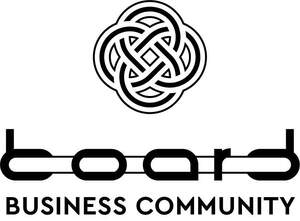

Trade Mark Journal No.2025/021 23 May 2025
UK00004199031 6 May 2025 (9,35,41)

International priority date claimed: 10 April 2025
(Ukraine)
(M202506373)
- Class 9
- Audio interfaces; computer operating programs, recorded; computer programs, downloadable; computer programs, recorded; computer software applications, downloadable; computer software platforms, recorded or downloadable; computer software, recorded; data sets, recorded or downloadable; digital files, downloadable; image files, downloadable; interfaces for computers; screensavers as screen savers for computers, recorded or downloadable.
- Class 35
- Administration of consumer loyalty programs; administrative processing of purchase orders; administrative services for the relocation of businesses; advertising; advertising agency services; advertising by mail order; advertising services to create brand identity for others; advisory services for business management; arranging and conducting of commercial events; bill-posting; business appraisals; business consultancy services for digital transformation; business efficiency expert services; business inquiries; business intermediary services relating to the matching of potential private investors with entrepreneurs needing funding; business intermediary services relating to the matching of various professionals with clients; business management assistance; business management consultancy; business organization consultancy; business partnership search; business research; commercial information agency services; commercial lobbying services; commercial or industrial management assistance; compilation of information into computer databases; compilation of statistics; compiling indexes of information for commercial or advertising purposes; competitive intelligence services; computerized file management; consultancy regarding advertising communication strategies; consultancy regarding public relations communication strategies; consumer profiling for commercial or marketing purposes; corporate communications services; data processing services [office functions]; data search in computer files for others; development of advertising concepts; development of business organization strategies relating to corporate social responsibility; development of market surveys; development of marketing concepts; direct mail advertising; dissemination of advertising matter; distribution of samples; drawing up of statements of accounts; economic forecasting; influencer marketing; interim business management; layout services for advertising purposes; market intelligence services; market studies; marketing; marketing in the framework of software publishing; marketing research; marketing through product placement for others in virtual environments; media relations services; negotiation and conclusion of commercial transactions for third parties; negotiation of business contracts for others; office machines and equipment rental; online advertising on a computer network; opinion polling; outdoor advertising; outsourced administrative management for companies; outsourcing services [business assistance]; pay per click advertising; payroll preparation; personnel management consultancy; preparation of business profitability studies; presentation of goods on communication media, for retail purposes; professional business consultancy; promotion of goods through influencers; providing business information; providing business information via a website; providing commercial and business contact information; providing telephone directory information; providing user rankings for commercial or advertising purposes; providing user reviews for commercial or advertising purposes; psychological testing for the selection of personnel; public relations; publication of publicity texts; publicity material rental; radio advertising; registration of written communications and data; rental of advertising time on communication media; rental of office equipment in co-working facilities; sales promotion for others; sales prospecting for others; scriptwriting for advertising purposes; search engine optimization for sales promotion; sponsorship search; systemization of information into computer databases; targeted marketing; telemarketing services; updating and maintenance of data in computer databases; updating and maintenance of information in registries; updating of advertising material; web indexing for commercial or advertising purposes; website traffic optimization; wholesale and retail services for audio interfaces, interfaces for computers, downloadable computer programs, recorded computer programs, recorded computer operating programs, downloadable computer software applications, recorded or downloadable computer software platforms, recorded or downloadable data sets, downloadable computer programs, recorded computer programs, recorded computer software, recorded or downloadable screensavers as screen savers for computers, downloadable image files, downloadable digital files, commercial intermediation services; word processing. .
- Class 41
- Academies [education]; arranging and conducting of conferences; arranging and conducting of congresses; arranging and conducting of in-person educational forums; arranging and conducting of workshops [training]; correspondence courses; production of podcasts; providing films, not downloadable, via video-on-demand services; providing information in the field of education; providing information in the field of entertainment; providing online electronic publications, not downloadable; providing online images, not downloadable; providing online videos, not downloadable; providing training and educational examination for certification purposes; research in the field of education; subtitling; teaching / educational services / instruction services; training services provided via simulators; transfer of business knowledge and know-how [training]; tutoring; vocational guidance [education or training advice]; writing of texts.
LIMITED LIABILITY COMPANY “BUSINESS-COMMUNITY BOARD”
Representative: Trademarkroom Ltd